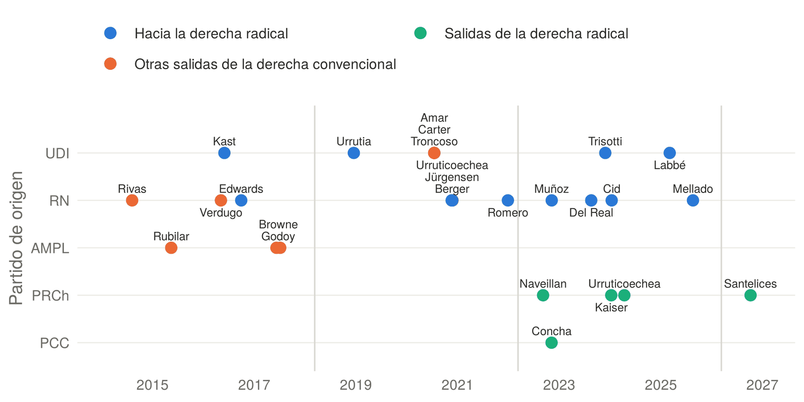
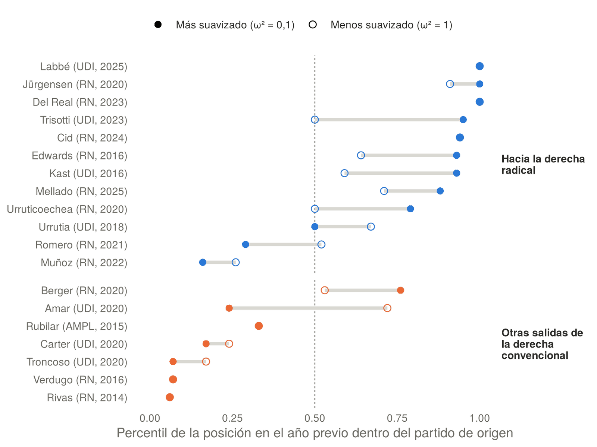
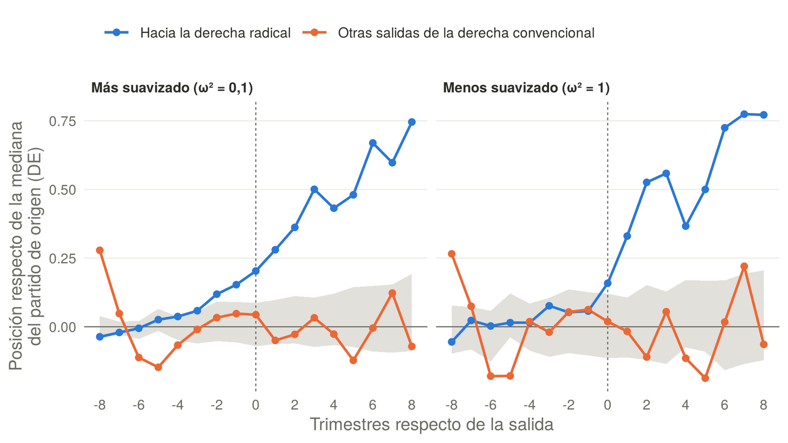

¿Quién se va y qué cambia? Salidas de partido en la derecha chilena y el voto en la Cámara de Diputadas y Diputados, 2014–2026
Entre 2014 y 2026 hubo veintiséis renuncias de diputados a partidos de derecha durante su mandato. En doce de ellas, el diputado terminó en el Partido Republicano, el Partido Nacional Libertario o el Partido Social Cristiano. Una parte de la recomposición de la derecha chilena ocurrió así dentro del Congreso, y no solo en las urnas.
Este documento de trabajo pregunta quiénes se van y qué cambia en su voto. Retoma la pregunta de mi tesis de licenciatura, pero la reconstruye desde cero, con el universo completo de salidas y la conducta legislativa de quienes se van y de quienes se quedan. Esta entrada resume los hallazgos; el documento completo desarrolla el marco teórico, el método y las limitaciones.
Datos y métodos
Cada salida tiene fecha de anuncio público, destino, motivo declarado y fuente verificable. La posición de cada diputado en cada trimestre se estima con un modelo de puntos ideales dinámico sobre 864.324 votos nominales en proyectos de ley, en dos especificaciones de suavizamiento que se reportan en igualdad. Con esas posiciones se estima un modelo de riesgo de salida, un estudio de eventos con un grupo de control de diputados que se quedan y pruebas de proceso caso a caso. El análisis se extiende al Senado con el mismo método. Todo el procesamiento es reproducible en R.

Cinco hallazgos
1. Quienes se van hacia la derecha radical ya estaban a la derecha de su partido
Once de los doce votaban, en el año previo, en la mitad de su bancada más cercana a la derecha radical. Su percentil medio dentro del partido es 0,78 o 0,69 según la especificación, frente a 0,50 esperado si la posición no importara. Las demás salidas de la derecha convencional muestran el patrón contrario, porque provienen de diputados ubicados a la izquierda de su partido.

2. La posición predice la salida; el distrito, no
Cada décima de desviación estándar a la derecha de la mediana del partido multiplica el riesgo de salir hacia la derecha radical por entre 1,4 y 1,9, con la derecha en el gobierno o en la oposición. El voto por la derecha radical en el distrito, la votación personal del diputado y el límite a la reelección no tienen efecto detectable.
3. La distancia no está en los temas valóricos
Quienes salen hacia la derecha radical se distinguen de su partido en las votaciones sobre orden y seguridad y sobre economía, pero no en las de género, sexualidad y familia, en las que la UDI y RN ya votan de manera conservadora. La derecha radical reclutó en la Cámara a los legisladores más duros en seguridad y más ortodoxos en economía, no a los más conservadores en lo moral.
4. El voto cambia después de la salida, no antes
Antes de salir, el voto de quienes se van apenas se aleja de su partido, en un rango similar al de los colegas que se quedan. En el año siguiente, se ubican 0,4 desviaciones estándar más a la derecha de su partido de origen y su acuerdo con la mayoría de ese partido cae 11 puntos. La salida libera preferencias que la disciplina partidaria contenía.

5. La distancia es condición casi necesaria, no suficiente
Las pruebas de proceso muestran que casi todos los que salen hacia la derecha radical estaban en el flanco derecho de su partido, pero también lo estaban otros que se quedaron. El detonante suele ser un conflicto con la conducción o una candidatura al Senado o a la Presidencia que el partido de origen no ofrecía. En el Senado no hubo renuncias hacia la derecha radical, pero el senador que RN suspendió por apoyar a José Antonio Kast estaba entre los más a la derecha de su bancada.
Alcance
Doce salidas permiten una prueba de rangos y un modelo de riesgo sencillo, pero no estimar con precisión efectos de varias variables a la vez, y en una de las especificaciones el modelo depende de los casos más extremos. El análisis temático es sugerente y no concluyente. El documento también muestra que el registro oficial de militancias de la Cámara fecha las salidas con una mediana de 72,5 días de atraso y omite algunas, por lo que la base verificada de salidas queda publicada para otros estudios.
Cómo citar
Bottinelli Baltra, L. (2026). ¿Quién se va y qué cambia? Salidas de partido en la derecha chilena y el voto en la Cámara de Diputadas y Diputados, 2014–2026 (Documento de trabajo N.° 5). https://doi.org/10.5281/zenodo.24026531
El código en R y los datos procesados de esta versión están archivados en Zenodo: https://doi.org/10.5281/zenodo.24026991.
← Volver al blog